Visual Studio Code se descarga gratuitamente:
https://code.visualstudio.com/
https://code.visualstudio.com/docs/languages/javascript
VSCode incluye de serie la extensión ESLint para verificación y autocompletado de Javascript.
Para ejecutar HTML directamente desde VSCode debe emplearse extensión LiveServer.
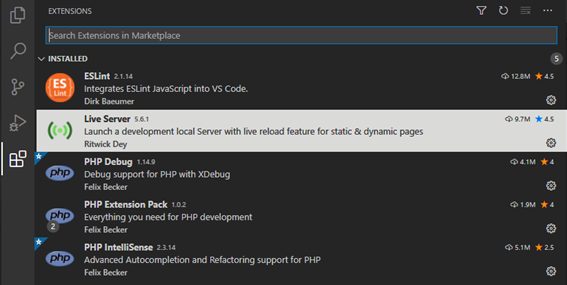
Completada la instalación es posible ejecutar HTML/JS abriendo navegador contra servidor propio seleccionando:
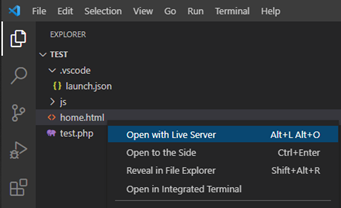
URL lanzada:
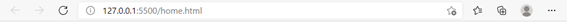
Instalar extensión
Debugger for Chrome:
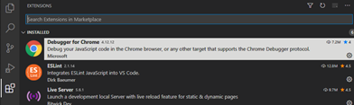
Los conceptos área y carpeta de trabajo hace
referencia a la ubicación de los ficheros de la aplicación en la que
queremos trabajar:
Archivo --> Abrir Carpeta...
Archivo --> Agregar carpeta al espacio de trabajo…
Después debe guardarse el archivo de espacio de trabajo:
Archivo --> Guardar espacio de trabajo como…
Finalmente, para abrir el espacio de trabajo debe seleccionarse:
Archivo --> Abrir el espacio de trabajo…
En Visual Studio Code abrimos la carpeta:
Archivos --> Abrir Carpeta…
Haciendo clic en el icono de “explorador” podemos ver la nueva carpeta de trabajo y los archivos que contenga:
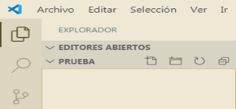
Para crear un nuevo archivo hacemos clic en el icono a la derecha , le damos el nombre “home.html” y añadimos el siguiente código al fichero “inicio.html”:
<!doctype html> <html lang="en"> <head> <meta charset="utf-8"> <title>Prueba Javascript</title> <meta name="description" content="Prueba Javascript"> <meta name="author" content="SitePoint"> </head> <body> <script> for( i = 0; i < 10; i ++) { document.write("<h1>" + i + "</h1>"); } </script> </body> </html>
Al seleccionar pestaña de depuración/ejecución en barra lateral:
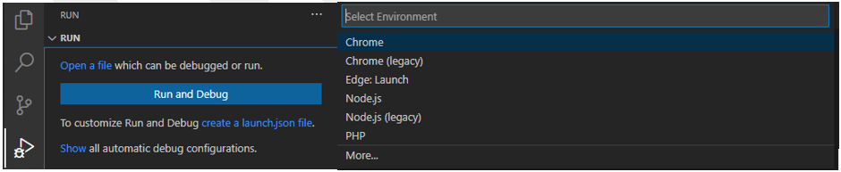
Seleccionamos “create a launch.json file”, y la extensión responsable de la ejecución del proyecto para generar archivo “launch.json”:
{ // Use IntelliSense to learn about possible attributes. // Hover to view descriptions of existing attributes. // For more information, visit: https://go.microsoft.com/fwlink/?linkid=830387 "version": "0.2.0", "configurations": [ { "type": "pwa-chrome", "request": "launch", "name": "Open inicio.html", "file": "c:\\xampp\\htdocs\\test_js\\inicio.html" } ] }
Para iniciar la depuración seleccionamos el icono
“Depurar”. 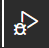
.
A modo de ejemplo vamos a depurar el código de la página anterior “inicio.html” que genera unos encabezados con los valores del 1 al 10:
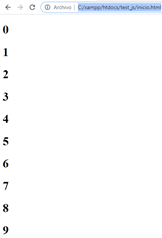
Lo primero para depurar la ejecución de una página o script de Javascript es establecer puntos de ruptura. Los puntos de ruptura permiten detener la ejecución del código en una línea para examinar la ejecución del código siguiente.
Puede situarse un punto de ruptura de dos modos:
• Hacerse clic con el ratón en margen izquierdo de la línea donde quiere situarse.
• Hacerse clic con el botón derecho en el margen izquierdo de la línea donde situarlo y seleccionar la opción: “Agregar un punto de interrupción”:
Una vez situado el punto de ruptura se muestra como un punto rojo en el margen izquierdo del código:
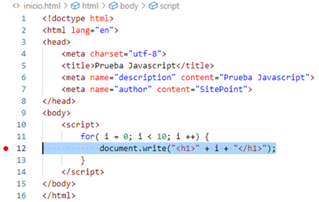
Seguidamente pulsamos la flecha verde situada a su izquierda:
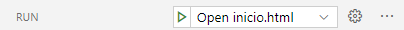
Al pulsar el botón de ejecución se abre el navegador y la ejecución se detiene en el punto de ruptura señalado:
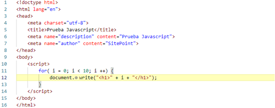
El seguimiento de ejecución consiste en ejecutar el código a
partir de un punto de ruptura línea a línea para comprobar la ruta
que toma la ejecución. Para ello se emplean la barra de herramientas
flotante en la parte superior de la ventana de edición durante la
depuración:
• Paso a paso por procedimiento --> Permite ejecutar cada sentencia de modo que si llaman a otra función su código se ejecute sin examinarlo.
• Paso a paso por instrucción --> Permite ejecutar cada sentencia de modo que si llaman a otra función su código también se examina línea a línea:
• Salir de la depuración --> Permite ejecutar todas las sentencias restantes de la función actual para continuar depurando en el código que llamó a la función.
• Detener --> Detiene la ejecución impidiendo que la página terminen de ejecutarse.
• Continuar --> Prosigue la ejecución normalmente hasta el siguiente punto de ruptura o el final de la ejecución.
La inspección de ejecución consiste en examinar el valor que
toman las variables empleadas en el código según se va haciendo el
seguimiento del código a partir de un punto de ruptura.
VARIABLES : Muestra el valor de las variables accesibles en el código que se está examinando y cómo van cambiando de valor según la ejecución avanza. Estas se muestran en tres categorías:
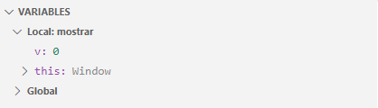
INSPECCION ( WATCH ) : Permite introducir expresiones para obtener su resultado según el valor de las variables durante el seguimiento del código. Para añadir una expresión se hace clic en el icono a su margen derecho:
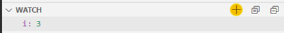
PILA DE LLAMADAS ( CALL STACK ) : Indica el camino que ha seguido la ejecución hasta la línea actual cuando hay llamadas a funciones/métodos.
Por ejemplo: En el siguiente código la ejecución está detenida en la
línea 12 de la función mostrar() que ha sido llamada desde la línea 16
del código principal:
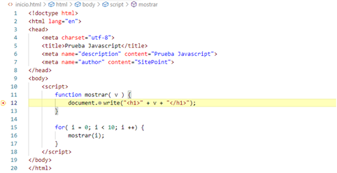
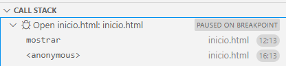